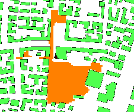

Siguiente: Validación y Conclusiones
Subir: Ejemplos de aplicación
Anterior: Variación de los modelos
Índice General
Como se describió en la sección 7.5, otra funcionalidad
disponible en la herramienta de software es la de determinar
aquellos puntos donde existe línea de vista entre la radiobase y el
móvil en caso de disponer de datos de edificaciones. Esto puede
observarse en la figura 11.9, donde se identifican con
color naranja los puntos que cumplen con la condición. La antena se
encuentra en el sitio donde está la cruz, a 12 m de altura sobre el
edificio.
Figura 11.9:
Verificación de línea de vista
|

|
SAPO